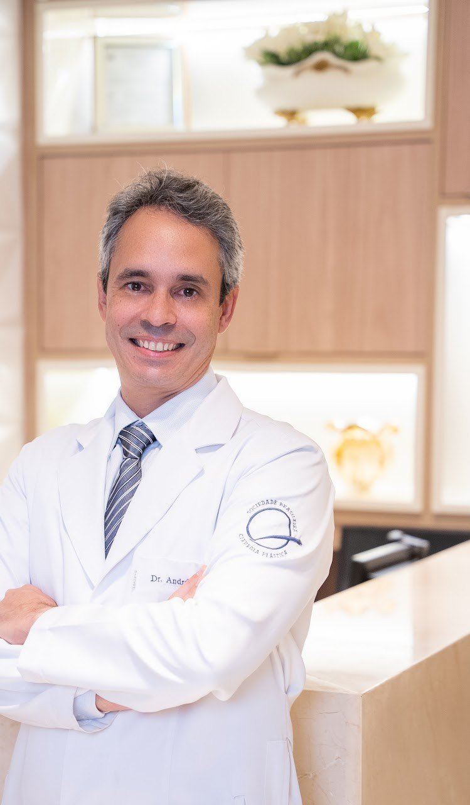
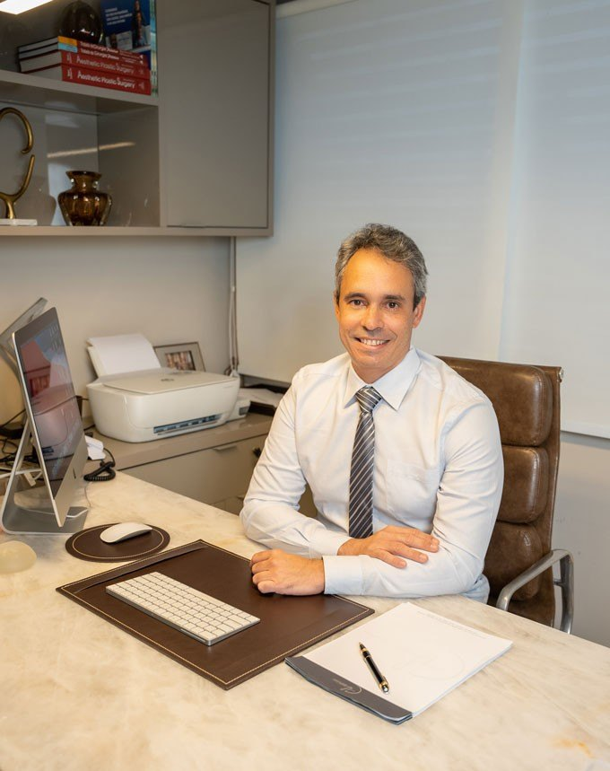
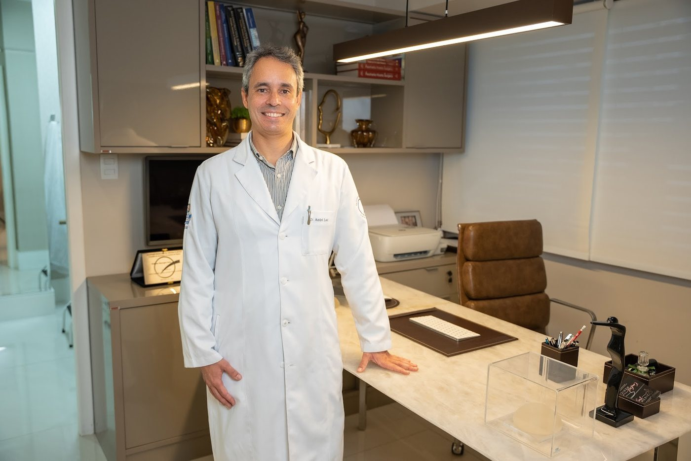

Cirurgião plástico · CRM-BA 14640 · RQE 8035
Dr. André LealDoutor em Cirurgia Plástica pela Faculdade de Medicina da USP
Cirurgião plástico do Hospital Universitário Professor Edgard Santos (HUPES-UFBA), onde é preceptor da residência de cirurgia plástica, e membro titular da Sociedade Brasileira de Cirurgia Plástica. Atende com hora marcada no Empresarial Cidade Jardim, no Candeal.
- 4,9 ★★★★★ 29 avaliações no Google
- Pós-bariátrica · mamas · reconstrução

Por onde começar
O que trouxe você até aqui?
Escolha o assunto e leia com calma antes da consulta. Onde há aspas, o texto é do próprio Dr. André, com link para a fonte. A indicação é sempre individual, definida em consulta.
Perdi muito peso e sobrou pele
Os critérios que o Dr. André descreve, as cirurgias reparadoras e as expectativas.
Pós-bariátricaMamasPenso em uma cirurgia das mamas
Prótese de silicone, mastopexia e redução: o que cada uma faz.
Cirurgia das mamasCirurgia reparadoraVou reconstruir a mama
Implantes, tecidos da própria paciente, microcirurgia e o tempo depois da radioterapia.
Reconstrução mamáriaAbdomeO abdome me incomoda
Abdominoplastia clássica ou em âncora, e quando a lipoaspiração entra no plano.
Abdome e lipoaspiraçãoTrajetória acadêmica
Da tese na USP à residência no HUPES.
Cada linha traz a fonte pública de onde saiu: a biblioteca da USP, o CNES, a Ebserh, a SBCP, a UFBA e o CREMEB.
Torres, André Leal Gonçalves
Estudo da anatomia do nervo tibial e seus ramos ao nível do terço distal da perna / André Leal Gonçalves Torres. -- São Paulo, 2011.
Tese (doutorado) -- Faculdade de Medicina da Universidade de São Paulo. Programa de Cirurgia Plástica.
Orientador: Marcus Castro Ferreira.
Descritores: 1. Túnel do tarso/anatomia & histologia 2. Nervo tibial/anatomia & histologia 3. Síndrome do túnel do tarso 4. Nervos periféricos […]
USP/FM/DBD-140/11
- 2011Doutorado na Faculdade de Medicina da USP
Título de Doutor em Ciências pelo Programa de Cirurgia Plástica, com a tese orientada pelo Prof. Dr. Marcus Castro Ferreira.
Fonte: tese (PDF, USP) · BDTD - 2012O artigo da tese
Publicado na Acta Ortopédica Brasileira com o orientador: “Study of the anatomy of the tibial nerve and its branches in the distal medial leg”.
Fonte: PubMed Central - 2014Concurso da Ebserh para o HUPES
Aprovado para o cargo de médico cirurgião plástico do Hospital Universitário Professor Edgard Santos, da UFBA.
Fonte: resultado final, Edital nº 24/2014 (IADES, PDF) - 2014–2022Hospital Aristides Maltez
Cirurgião plástico do hospital da Liga Baiana Contra o Câncer. Na apresentação dele: “ex-coordenador (2014 a 2021) do grupo de Cirurgia Plástica Reparadora […], com ênfase na Microcirurgia Reconstrutiva”.
Fonte: CNES · site do Dr. André - Desde 2015Cirurgião plástico do HUPES-UFBA
Vínculo atual de empregado público com o hospital universitário da UFBA.
Fonte: CNES - HojePreceptor da residência de cirurgia plástica
“Preceptor da Residência em Cirurgia Plástica da UFBA-HUPES”, diz o perfil dele na SBCP. Em 2025, orientou um trabalho de conclusão da residência sobre as redes sociais e a percepção dos pacientes de cirurgia plástica.
Fonte: SBCP · repositório da UFBA - HojeCâmara Técnica do CREMEB
Integrante da Câmara Técnica de Cirurgia Plástica do Conselho Regional de Medicina do Estado da Bahia.
Fonte: página do CREMEB
Também: membro titular da Sociedade Brasileira de Cirurgia Plástica · membro da Sociedade Brasileira de Cirurgia da Mão · equipe multidisciplinar do NTCO.
Formação e trajetória completas
Nas palavras dele
“[…] acredito que a cirurgia plástica não é motivo de capricho ou vaidade, mas uma busca constante por um estado de bem-estar físico, mental e social.”
“Por muitas vezes a cirurgia plástica é vista por parte da sociedade como algo fútil e desnecessário, mas quando analisada sob a ótica da qualidade de vida, da autoestima e do bem-estar, ela potencializa de forma positiva no indivíduo, não somente aspectos físicos e estéticos, mas principalmente psicológicos.”
“Saúde, autoestima e qualidade de vida andam juntos!”
Dr. André Leal, na página inicial do site dele em 2018 (cópia no Internet Archive).
Cirurgia reparadora
Reconstrução mamária e microcirurgia.
De 2014 a 2022, o Dr. André foi cirurgião plástico do Hospital Aristides Maltez, da Liga Baiana Contra o Câncer, segundo o CNES. Na apresentação que publica, ele se descreve como “ex-coordenador (2014 a 2021) do grupo de Cirurgia Plástica Reparadora do Hospital Aristides Maltez (HAM) / Liga Baiana Contra o Câncer (LBCC), com ênfase na Microcirurgia Reconstrutiva”.
- Com implantesReconstrução com prótese de silicone, às vezes depois de um expansor.
- Com tecidos própriosRetalhos de outra região do corpo, inclusive por microcirurgia.
- No tempo certoPlanejada com a equipe que trata o câncer.
“Oi, tudo bem. Os estudos demonstraram que os efeitos da radioterapia sobre os tecidos irradiados, principalmente a pele (chamado de radiodermatite), perduram por um período médio de 06 meses. Isso varia bastante com o número de sessões e a intensidade da carga indicada para cada tratamento. É importante uma avaliação prévia, após esse período, para determinar a melhor opção de reconstrução, visto que os danos teciduais podem tornar algumas opções, aparentemente mais simples, inexequíveis.”
Dr. André Leal, em resposta pública na DoctoraliaAvaliações
O que os pacientes escreveram.
Ele foi muito atencioso, calmo e explicou tudo com muita clareza.
Dr André é um médico incrível!! Muito competente, correto, acessível e humano.
Ele passa muita confiança e tranquilidade desde antes da cirurgia, senti que estava em boas mãos!
Dr. André é um profissional extremamente competente e atencioso, presente desde a avaliação inicial até o pós-operatório.
Profissional de excelência com atendimento humanizado.
Excelente profissional. Me senti segura e confiante. Além da disponibilidade, atenção e competência!
Médico excelente! Ótimo atendimento. Muito ético e profissional.
Trechos de avaliações públicas do Google e da Doctoralia, com nome abreviado e a data informada por cada plataforma.
Conteúdos
Sumário deste site.
Oito páginas, como os capítulos de um trabalho: as cirurgias que o Dr. André apresenta, as respostas dele, a formação e o consultório.
- 1Cirurgia plástica pós-bariátricacritérios, cirurgias e expectativas
- 2Cirurgia das mamasaumento, mastopexia e redução
- 3Reconstrução mamária e microcirurgiacirurgia reparadora
- 4Abdominoplastia e lipoaspiraçãoclássica, âncora e contorno
- 5Pálpebras e orelhasblefaroplastia e otoplastia
- 6Dúvidas frequentesas respostas dele
- 7Formação e trajetóriaUSP, HUPES, SBCP e CREMEB
- 8Consultório e agendamentoCandeal · mapa
Publicações e respostas, nas fontes originais
Consultório
Empresarial Cidade Jardim, no Candeal.
O endereço do perfil dele na SBCP e da ficha do Google. As consultas são com hora marcada.

Empresarial Cidade JardimRua Leonor Calmon, 44, salas 1001 e 1002 · Candeal · Salvador – BA · CEP 40296-210
Confirme dias e horários com a equipe pelo WhatsApp.
WhatsApp (71) 98605-7785
Endereço, mapa e o que levarDúvidas frequentes
Perguntas comuns
Onde fica o consultório?
No Empresarial Cidade Jardim: Rua Leonor Calmon, 44, salas 1001 e 1002, Candeal, Salvador – BA. Veja o mapa e como chegar.
Como agendar uma consulta?
Pelo WhatsApp (71) 98605-7785, o número de agendamento da ficha do Dr. André no Google. O atendimento é com hora marcada: confirme dias e horários com a equipe.
O Dr. André é membro da SBCP?
Sim. Na busca pública da Sociedade Brasileira de Cirurgia Plástica, ele aparece como membro titular, com CRM 14640 e RQE 8035-BA.
Quanto tempo depois da bariátrica dá para pensar na cirurgia plástica?
No texto dele, o Dr. André cita “entre 12 a 24 meses de pós-operatório da cirurgia bariátrica”, com a meta de peso atingida e o peso estável há pelo menos 3 meses, entre outros critérios. Veja a página de cirurgia pós-bariátrica; a avaliação é individual.
Ele faz reconstrução da mama?
A reconstrução mamária está entre as cirurgias que ele apresenta, e a cirurgia reparadora faz parte da trajetória dele: de 2014 a 2022, foi cirurgião plástico do Hospital Aristides Maltez. Veja a página de reconstrução mamária.
Aceita convênio? Quanto custa a consulta?
Confirme com a equipe, pelo WhatsApp, as condições de atendimento e os valores.
A consulta já define a cirurgia?
A consulta serve para avaliar a queixa e explicar as opções, com riscos e recuperação. A indicação é individual, e a decisão é sua.
Agende
Uma conversa com o Dr. André, no Candeal.
Atendimento com hora marcada no Empresarial Cidade Jardim, Rua Leonor Calmon, 44. Fale com a equipe pelo WhatsApp (71) 98605-7785 e confirme dias e horários.